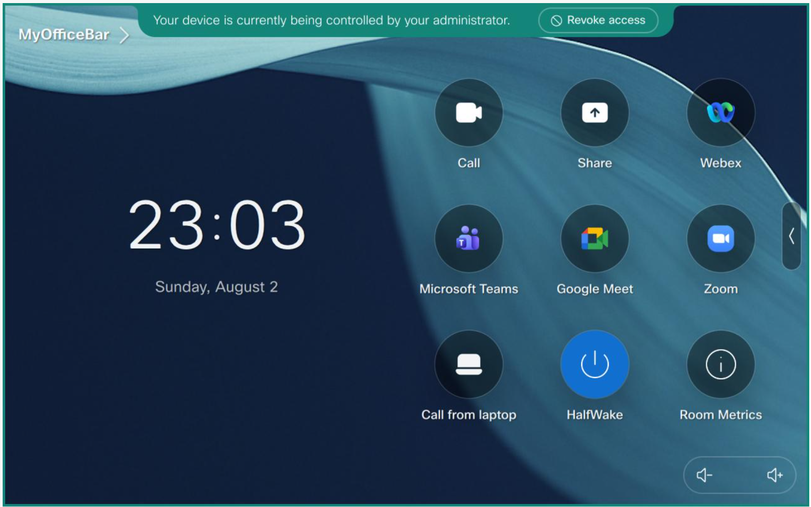

Customizations: Macros (xAPI Forge) & UI Extensions
Abstract
Macros and UI Extensions almost always travel together: a macro needs a button to trigger it, and a button needs a macro listening for the click. The old Macro Editor Pro is retired in CE-Deploy 16, replaced by xAPI Forge, a full Monaco-based IDE with xAPI IntelliSense, an AI assistant, and a live device connection for streaming macro engine logs. In this lab you'll write a macro in xAPI Forge, publish it straight into CE-Deploy, deploy it and its matching panel to your device with your pod tag, then confirm it's actually running.
-
Where
Apps → Design & Development → xAPI Forge, then Customizations
-
Time
About 12 minutes
-
Goal
Write a macro, publish it, and deploy it plus its matching panel to your device
dep-2.4 Lab
Not under a Design menu anymore
If you've used an older CE-Deploy version, you may remember a "Design" item in the main menu bar. That's gone in this version — all the design tools, including xAPI Forge, moved into the Apps dashboard.
| LaunchHalfwake.js | |
|---|---|
1 2 3 4 5 6 7 | |
Optional: Try the AI Assistant
This challenge is optional and is not required to complete the lab. xAPI Forge defaults to Claude for its AI Assistant, which requires a valid Anthropic API key with available API credits. The lab does not provide this key.
If you already have a suitable key and want to try the feature, open the AI Assistant settings, select Claude, enter your Anthropic API key, and test the connection. Then click AI in the toolbar and ask it to "Create a macro that puts the device into halfwake when a panel called halfwake is clicked." Compare its result with the required snippet above, then use Explain to see how the assistant describes the code.
If you do not have a valid Claude API key, skip this challenge and type the supplied macro exactly as shown. You will not lose any required lab functionality.
xCommand Macros Runtime Restart
Click Next: Select Devices, target it at your pod tag with Video Devices Only checked (same as before), then Next: Schedule and Continue.
.js to .xml):
| LaunchHalfwake.xml | |
|---|---|
1 2 3 4 5 6 7 8 9 10 11 12 13 | |
Tip
Deploying a single panel with the same Panel ID creates it the first time and overwrites it
on every later deploy. If you ever need to push more than one panel at once, use the nested
Config tab instead, which accepts an XML file containing several <Panel> blocks.
Warning
An error may occur if this checkbox is not selected. Make sure it's checked if you receive an error while deploying.
Success
The halfwake button should now appear on your device's home screen. Press it and the
device drops into halfwake  Look at you go: a working macro and its matching UI
extension, written, tested, and deployed entirely from CE-Deploy.
Look at you go: a working macro and its matching UI
extension, written, tested, and deployed entirely from CE-Deploy.
{kind=link}

Catch Your Own Drift
Later in this module you'll use Config Auditor to audit a fleet's configuration against a baseline. Its sibling feature, Macro Drift Detection, does the same thing for macros: it can tell you if a device's macro has drifted from what you just deployed. Worth a look after this lab if you have time.